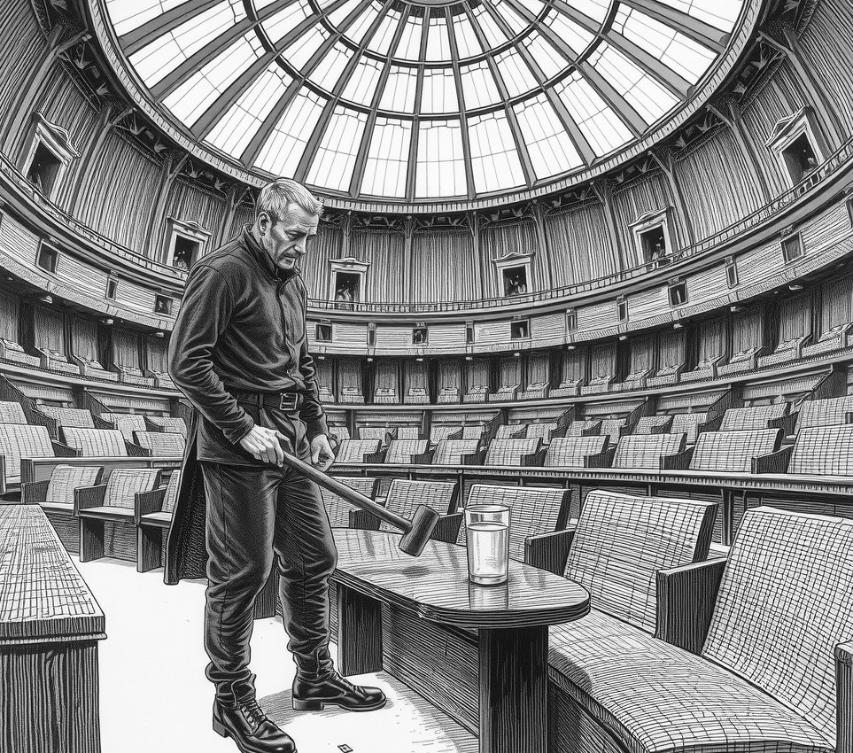

South Crater District . 25 July 2343

A three-year acoustics study confirmed Monday that Enceladus Senate gavel-smiths can now strike down public rights in total silence.
Using rubber padding and vacuum-damping joints, smiths stopped the wooden bench from ringing inside the low-gravity dome.
Acoustics researcher Dr Hema Pillar explained the breakthrough at a press briefing.
"The strike produces zero decibels inside the chamber," Pillar said. "The hammer hits hard, but the air stays still. You can abolish an entire transit grid and the sleeping public just assumes they had a bad dream."
Guildmaster Silas Rae defended the silent tools, arguing that noisy legislation is bad for public health.
"The public expects rest," Rae told reporters. "No one wants to wake up at three in the morning just to hear their water ration cut in half. They would much rather find out when they turn on the tap."
Acoustic logs show sixty decrees passed last week while the city slept. Citizens slept through two curfews, a ban on air pumps, and the sale of the dome transport grid to a private mining syndicate.
A civic watchdog group petitioned for a bright red lamp to flash whenever a veto lands.
The Senate rejected the lamp without a sound, then quietly voted to reclassify the watchdog group as municipal lawn care.